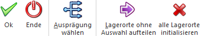

In dem Programmbereich "Zuordnung" werden alle Ausprägungs- und Lagerortartikel des aktuellen Produktionsauftrags dargestellt und können u.a. ausgeprägt oder Lagerorten zugewiesen werden.
Hinweis
Die Zuordnung kann über verschiedene Wege aufgerufen werden:
ü Der Bildschirm wird automatisch bei der Anlage eines neuen Produktionsauftrags geöffnet. Die Anlage eines Auftrags kann dabei über die Produktionsvorbereitung, das Erfassen eines Produktionsauftrags aus der Belegerfassung der WinLine FAKT heraus oder über das Produktionsauftrag einlesen geschehen.
Hinweis
Hierzu muss in den PPS-Parametern (Bereich "Produktionsauftragsanlage") die Option "Zuordnungsfenster" auf "0 - immer öffnen (Fix)" oder "2 - nur im Fehlerfall" gestellt worden sein.
ü Es wird der Punkt "Zuordnung" innerhalb der linken Navigation angewählt. Die Navigation steht wiederum in vielen Programmen (z.B. Stückliste bearbeiten) zur Verfügung.
Achtung
Wurden bereits Lagerbewegungen für den Produktionsauftrag durchgeführt (Materialentnahme, Teilendmeldung, etc.), so kann die Zuordnung nicht mehr geöffnet werden!
Achtung
Grundvoraussetzung für eine Darstellung der Ausprägungs- und oder Lagerortartikel ist eine korrekte Einstellung der Ausprägungsoptionen. Dort muss für den jeweiligen Typ zumindest "2 - kann erfolgen" hinterlegt worden sein (nähere Informationen entnehmen Sie bitte dem Kapitel "Aufteilungsoptionen").

Die Zuordnung untergliedert sich hierbei in die folgenden Bereiche, welche in den nachfolgenden Kapiteln beschrieben werden:
ü Tabelle "Ausprägungs- und
Lagerortartikel"
In diesem Bereich kann definiert werden, für welche
Daten eine Verfügbarkeitsprüfung erfolgen soll.
ü Register "Vorbelegung"
Im Register
"Vorbelegung" können diverse Vorgaben für das Ausprägen und die Zuweisung von
Lagerorten getätigt werden.
ü Register "Info"
Im Register "Info"
der Zuordnung stehen diverse Informationen, bezogen auf den aktuellen Artikel
und den Produktionsauftrag, zur Verfügung
Die unterschiedlichen Vorgehensweisen zum Ausprägen und Lagerorte zuweisen werden wiederum in dem Kapitel Ausprägungen erfassen und Lagerorte zuweisen detailliert erläutert.
Buttons

Ø Ok
Bei Anwahl des Buttons "Ok" bzw. der Taste F5 werden alle vorgenommenen Änderungen gespeichert.
Ø Ende
Durch Anwahl des Buttons "Ende" bzw. der Taste ESC wird das Fenster geschlossen und alle nicht gespeicherten Angaben verworfen.
Ø Ausprägung wählen
Bei Anwahl dieses Buttons oder der Taste F6 wird das Fenster "Ausprägungen erfassen" für den aktuellen Ausprägungsartikel geöffnet.
Ø Lagerorte ohne Auswahl aufteilen
Bei Anwahl des Buttons "Lagerorte ohne Auswahl aufteilen" wird allen Lagerortartikel ohne Lagerorterfassung ein Lagerort zugewiesen, wobei die Option "nur Lagerorte mit Bestand berücksichtigten", die Lagerortvorgabe gemäß Stückliste und die Lagerortvorbelegung des Produktionsauftrags berücksichtigt werden.
Ø alle Lagerorte initialisieren
Mit Hilfe dieses Buttons werden alle Lagerorterfassungen entfernt und die Lagerort-Kugeln auf "rot" gestellt.